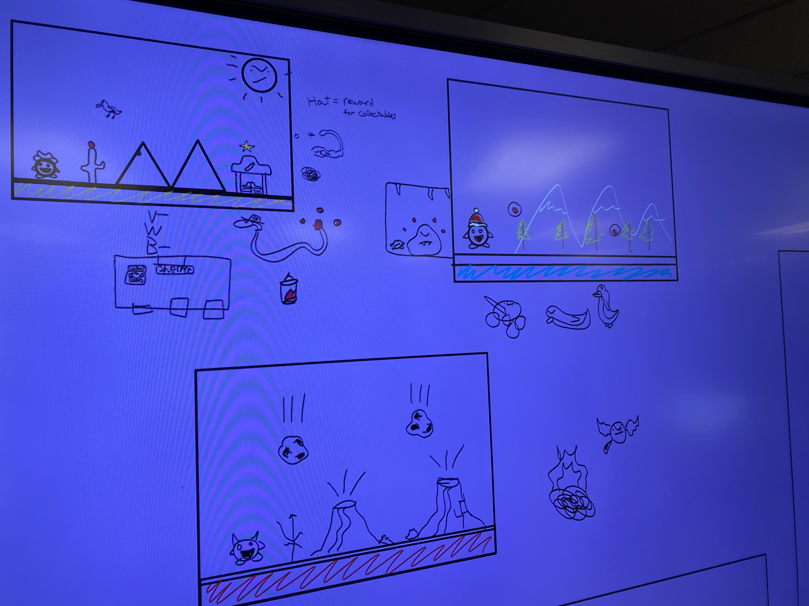
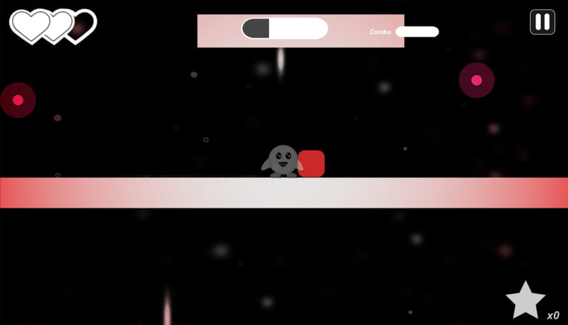

| Capstone Progress Week 8 |
Last week, we started with a whiteboard session where we designed some concepts of what each level and theme should look like.
We stuck with the idea of color representing a level’s theme and came up with blue for a snowy/icy level, yellow for the desert level, and red for the fiery level.
In the future, we might add more levels based off of other colors like green for a jungle.
Enemies are also themed around these levels.
In the snow we have penguins and snowmen, the desert has western animals like vultures and buffalo, and the fire is still to be determined.

By the end of this week, we would like to have the snow level fully polished with enemies, decoration, and challenges.
We also need to get Jenkins up and running. Will and I will be working on this together since I am the owner of the Github repo.
I wanted to try working on some more visual aspects of the game. Art is a little out of my comfort zone, but I’m proud of what I’ve accomplished so far. I worked on a vignette around the edge of the screen that appears when the player takes damage and slowly fades out over time. This is to help notify the player of when he took damage and gives them an idea of their immunity time.  I also started work on some decoration for our first level. I added mountains in the background with a parallax effect. I’m planning on adding a layer of trees and other decorations to give more life to our scene.  There are a few gameplay tweeks that I would like to work on this week.
As of now, if skilled enough, the player can jump off of the same object repeatedly and gain an infinite amount of combo.
To fix this, I’m looking into storing which object has been bounced off of previously and removing the player’s capability to interact with it until another object is jumped off of or the player touches the ground.
This will still allow for the player to bounce between objects in the case of dodging an enemy for example.
Curently, there is no death box for the player if they fall out of the map.
I would like to add a transition effect for teleporting back to the previous checkpoint if the player does fall into a pit.
There are a few gameplay tweeks that I would like to work on this week.
As of now, if skilled enough, the player can jump off of the same object repeatedly and gain an infinite amount of combo.
To fix this, I’m looking into storing which object has been bounced off of previously and removing the player’s capability to interact with it until another object is jumped off of or the player touches the ground.
This will still allow for the player to bounce between objects in the case of dodging an enemy for example.
Curently, there is no death box for the player if they fall out of the map.
I would like to add a transition effect for teleporting back to the previous checkpoint if the player does fall into a pit.
The game is really starting to come together now and I look forward to seeing what the final version of the first level and boss level look like. |
|---|